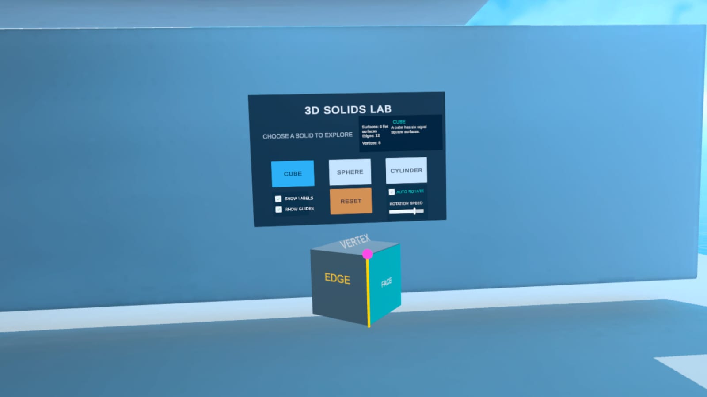

من التصميم التربوي إلى التجربة الغامرة
تصميم وتطوير مختبر الهندسة بالواقع الافتراضي
بحث يوثّق بناء بيئة تعليمية تفاعلية لطلبة المرحلة الثانوية، لاستكشاف المجسّمات والتحويلات الهندسية والمقاطع المستوية الناتجة عن القطع.

5فصول مترابطة
10ملاحق بحثية وتطويرية
32مرجعًا من النسخة المصدرية
7مقاطع توثيق تطبيقية
ابحث بكلمتين أو أكثر للوصول إلى القسم؛ تعمل الروابط دون الحاجة إلى البحث.
فصول البحث #
الفصل الأكاديمي
الفصل الأول: الإطار العام للبحث
قراءة الصفحة ←الفصل الأكاديميالفصل الثاني: الإطار النظري والدراسات السابقة
قراءة الصفحة ←الفصل الأكاديميالفصل الثالث: منهجية البحث وإجراءات التصميم والتطوير
قراءة الصفحة ←الفصل الأكاديميالفصل الرابع: نتائج التصميم والتطوير
قراءة الصفحة ←الفصل الأكاديميالفصل الخامس: المناقشة والاستنتاجات والتوصيات
قراءة الصفحة ←مسارات القراءة والتوثيق #
الفهرس المطبوع في النسخة المصدرية #
جدول المحتويات #
المحتويات الرئيسة وأرقام صفحات البداية
فهرس النسخة الورقية وأرقام صفحاتها
| القسم | الصفحة |
|---|---|
| إقرار منهجي، شكر وتقدير، والملخص العربي | 2 |
| Abstract | 3 |
| الفصل الأول: الإطار العام للبحث | 6 |
| الفصل الثاني: الإطار النظري والدراسات السابقة | 11 |
| الفصل الثالث: منهجية البحث وإجراءات التصميم والتطوير | 16 |
| الفصل الرابع: نتائج التصميم والتطوير | 23 |
| الفصل الخامس: المناقشة والاستنتاجات والتوصيات | 27 |
| المراجع | 31 |
| الملاحق | 34 |